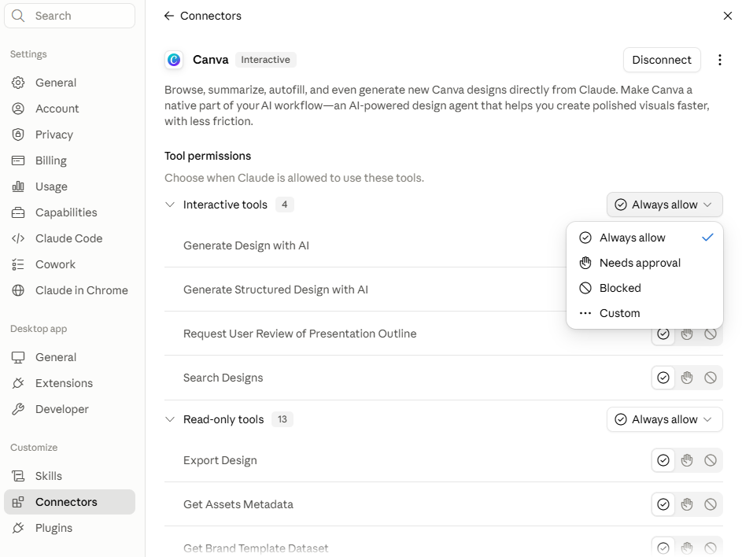

If you're part of the 69% using AI but not yet seeing the results you hoped for, this is the piece that changes what Claude can actually do for you. Only 5% of businesses using AI are actually set up well enough to get real value from it. Without a connector, Claude can only work with what you type or paste in. With one, it can reach into the tools you already use and read from them, or write to them, directly.
Each connector is like a unique plug. Every tool has its own shape, so each one needs its own connector to work with Claude. That's the real line between "Claude gave me an answer" and "Claude went and did the thing."
Claude can read from and create files in a folder you choose.
Read and draft directly from your inbox, without you copying anything across.
Claude can see what's actually on your schedule, not just what you tell it.
Work directly with pages and databases you already keep there.
Find them by selecting Customise in the left menu panel, then Connectors, then Add, then browse connectors.
Connecting a tool doesn't hand Claude the keys to everything in it. Permissions are set per tool and per action, not one blanket switch.

Real settings panel for a connected tool. Actions are grouped, here into Interactive tools and Read-only tools, and each group gets its own permission. Every individual action underneath can also be set on its own.
Claude just does it, no prompt each time.
Claude asks first, every time this action would run.
Claude can't use this action at all, even if asked.
Not every tool has a direct connector yet. That's not a dead end, just a different route in.
If the tool itself isn't connectable, drop what you need into a folder inside a tool that already is, Google Drive is the obvious one for most people. One real example: a recording tool with no direct Claude connector wasn't a dead end at all, the transcript just gets dropped into a Google Drive folder Claude already has access to, and it gets picked up and actioned from there exactly the same way. No link to the recording tool ever needed.
If a tool has a normal web interface but no official connector, Claude can work directly inside that browser tab. Genuinely useful for the cases routing through a folder doesn't fit.
Select Customise in the left menu panel, then Connectors, then Add, then browse connectors.
Google Drive or Gmail are the easiest starting points for most people.
Needs approval to start, especially on anything that writes or changes something.
Move individual actions to Always allow only once you've watched them work.
Do this today: connect one tool you already use, set it to Needs approval, and watch what Claude actually does with it before deciding what to loosen.